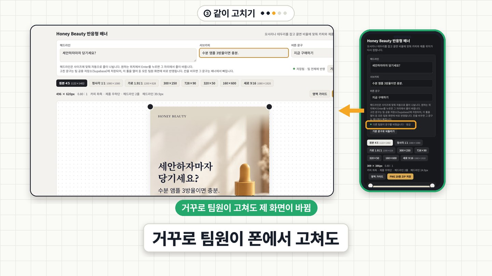

AI로 만든 툴,
팀 전체가 쓰게 되기까지 5단계
Claude로 만든 배너 툴이 아직 내 노트북에서만 돌고 있었어요. 링크 만들기(배포) → 고쳐 올리기 → 같이 고치기(저장 위치) → 우리 팀만(로그인) → 말이 안 통할 때(화면 이름), 다섯 단계를 실제로 돌려 봤어요. AI한테 보낸 요청문 4개 전문, 사람이 직접 눌러야 했던 것, 그리고 회사에서 쓰기 전에 볼 4가지를 모았어요. 코드는 몰라도 돼요.
유튜브에서 영상 보기 · 12분
00먼저, 어디에 붙여 넣나
요청문은 전부 툴을 만든 그 Claude 대화에 이어서 붙여 넣었어요. 새 대화에서 하려면 툴 파일(index.html)을 첨부하고 "첨부한 파일이 내가 만든 툴이야. 코딩은 몰라."부터 시작하면 돼요. AI가 알려 주는 단계는 그때그때 조금씩 달라서, 영상에 나온 단계 수(네 단계 · 다섯 단계 · 여섯 단계)는 2026-10-30 기준이에요.
- 링크 만들기 — 배포(Vercel)localhost · file로 시작하는 주소는 내 컴퓨터에서만 열려요. 인터넷에 올려서 링크로 열리게 하는 게 배포예요.
- 고쳐서 다시 올리기같은 이름의 파일을 GitHub 저장소에 다시 올리면 같은 링크가 알아서 최신으로 바뀌어요.
- 같이 고치기 — 저장 위치(Supabase)AI가 처음 만들어 준 툴은 고친 내용을 각자 브라우저에만 저장해요. 저장 위치를 팀 공용 창고 한곳으로 옮겨요.
- 우리 팀만 — 로그인 + 접근 규칙(RLS)짧은 링크는 아는 사람이면 누구나 열려요. 이메일 로그인 + 창고 쪽 자물쇠를 켜요.
- 말이 안 통할 때 — 화면 이름"그 버튼 좀 작게"는 세 번 다 엉뚱한 버튼을 골랐어요. 이름으로 시키면 딱 그것만 바뀌어요.
01링크 만들기 — 배포
그때 쓰는 서비스가 Vercel이에요. 이 요청문을 보내면 AI가 파일에 비밀 키가 있는지 먼저 훑어보고, 사람이 눌러야 할 걸 순서대로 알려 줘요(이번엔 네 단계: GitHub에 올리기 → Vercel에서 가져오기 → 배포 → 짧은 주소 찾기). Claude에 Vercel 연결 기능이 붙어 있으면 "직접 배포하겠다"고 나올 수 있는데, 화면에서 따라 하려면 두 번째 줄처럼 수동 단계로 다시 부탁하면 돼요.
첨부한 index.html이 내가 만든 배너 툴이야. 코딩은 몰라. 이 웹사이트를 다른 사람도 링크로 열 수 있게 Vercel에 배포해 줘. 1. 내가 직접 해야 하는 일(Vercel 가입·로그인, 승인 버튼)을 순서대로 알려 줘. 2. 배포가 끝나면 다른 사람에게 보낼 '프로덕션 도메인'(짧은 주소, 예: 이름.vercel.app)을 알려 줘. 배포마다 생기는 긴 주소 말고. 3. 나중에 내용을 고쳐서 다시 올리는 방법도 알려 줘. 같은 짧은 주소에 반영되게. 4. API 키 같은 비밀 값이 코드에 있으면 빼고 Vercel 환경 변수로 옮겨 줘. 코드는 몰라도 따라 할 수 있게 한 단계씩 설명해 줘.
💡 AI가 연결 기능으로 직접 올리려고 하면: "Vercel 연결 기능으로 직접 올리지 말고, 내가 화면에서 직접 따라 할 수 있게 수동 단계로 알려 줘. GitHub에 파일을 올리고 Vercel에서 그 저장소를 가져오는 방식으로."
GitHub 가입 → 새 저장소(Private) 만들기 → 'uploading an existing file'에 index.html 끌어다 놓기 → Commit
Vercel 가입(GitHub로) → Add New → Project → 저장소 Import → Deploy → 보안 확인 창이 뜨면 이메일로 온 코드 입력 → 3초 만에 완료(HTML 파일 하나라 빌드할 게 없어요)
AI가 만드는 시간: 1분 16초
- 링크가 두 종류예요. 위쪽 긴 링크(이름-무작위글자-계정.vercel.app)는 배포할 때마다 새로 생기고 기본 설정에선 Vercel에 로그인한 나만 열려요. 팀원한테 보낼 건 Domains 칸의 짧은 링크(이름.vercel.app)예요. 실제로 폰에서 둘 다 열어 봤더니 긴 링크는 로그인 창, 짧은 링크는 툴이 바로 떴어요.
02고쳐서 다시 올리기
Vercel이 GitHub 저장소를 계속 보고 있다가 파일이 바뀌면 알아서 다시 올려요. 이번엔 팀원이 문구를 바로 고칠 수 있게 입력 칸부터 넣었어요(2분 3초 뒤 새 파일). 같은 이름 index.html을 'Add file → Upload files'로 다시 올리고 Commit하면 끝. 배포 목록에 새 줄이 생기고 14초 뒤 Ready, 팀원 폰에서 같은 링크를 새로고침하면 입력 칸이 생겨 있어요.
배포는 됐어. 이제 팀원들이 이 툴 화면에서 헤드라인, 서브카피, 버튼 문구를 바로 고칠 수 있게 입력 칸을 넣어 줘. 고친 문구는 다음에 열어도 남아 있게 해 줘. 코드는 몰라. 고친 index.html 파일로 줘.
잘못 올렸으면 Vercel 프로젝트 화면의 'Instant Rollback'으로 바로 전 배포로 돌아갈 수 있어요(확인 두 번). 무료 플랜은 바로 전 배포로만 돌아가요. 되돌려 둔 동안엔 새로 올려도 자동 반영이 멈추니, 고친 다음엔 되돌리기를 풀어야 해요.
03같이 고치기 — 저장 위치를 창고로
입력 칸을 넣어 준 AI 스스로 한 줄 덧붙였어요. "고친 문구는 각자의 브라우저에만 저장됩니다. 팀 전체가 같은 문구를 공유해야 한다면 별도의 저장 공간이 필요합니다." 그 창고가 Supabase예요. 이 요청문에 AI는 다섯 단계와 파일 세 개(툴 파일 · 설정 파일 · 표 만드는 명령)를 줬어요. AI가 만드는 시간 3분 23초.
이 툴은 지금 고친 내용이 내 브라우저에만 저장돼서 팀원 화면에는 안 보여. 저장 위치를 Supabase로 바꿔 줘. 지금 화면에서 고치는 내용(헤드라인, 서브카피, 버튼 문구)을 Supabase 표에 저장하고, 툴을 열면 그 표에서 불러오게 해 줘. 내가 Supabase에서 직접 해야 하는 일(프로젝트 만들기, 키 복사 위치, 표 만드는 SQL)을 순서대로 알려 줘. 다른 사람이 고치면 새로고침 없이 내 화면에도 바로 보이게, 실시간 반영(Realtime)도 켜 줘. 코드는 몰라도 따라 할 수 있게 한 단계씩 설명해 줘.
💡 바로 안 바뀌고 새로고침해야 보인다면 실시간 반영이 꺼진 거예요. "Realtime이 켜져 있는지 확인해 줘" 한 줄이면 돼요.
① Supabase 가입 → New organization(무료) → New project: 이름 · 비밀번호(Generate) · 지역은 묶음에서 'Asia-Pacific' → 5초 만에 준비
② SQL Editor에 AI가 준 '표 만드는 명령' 붙여 넣고 Run → '위험할 수 있는 명령' 경고가 뜨는데 처음이라 지워지는 데이터가 없어요 → Run query → 8초 만에 Success → Table Editor에 표(banner_copy) 한 줄
③ 위쪽 Connect 버튼 → Project URL + Publishable key(공개용) 복사
④ AI가 준 파일 두 개(index.html · config.js)를 저장소에 올리고, config.js의 두 줄에 주소와 키를 붙여 넣기 → 자동 배포 → 툴에 '실시간 연결됨 · 팀 전체와 공유 중'
⑤ 노트북에서 고치면 팀원 폰이 새로고침 없이 바뀌고, 거꾸로도 돼요. 창고에 들어가는 건 문구 세 줄과 누가 언제 고쳤는지뿐, 사진은 툴 안에 그대로예요.
- Secret이라고 적힌 키는 절대 주지 마세요. 공개용(Publishable) 키는 이름 그대로 공개돼도 되는 키고, 보안은 표의 접근 규칙(RLS)이 맡아요. 단일 HTML 툴은 환경 변수를 못 읽어서 설정 파일에 공개용 키를 두는 거예요.
04우리 팀만 — 로그인 + 접근 규칙
지금 툴엔 가상 브랜드 문구밖에 없으니 괜찮지만, 고객 정보나 단가가 들어가는 툴이면 이대로 쓰면 안 돼요. 요청문은 한 줄이에요. AI가 알려 준 건 여섯 단계였는데 핵심은 두 가지, '가입 허용' 끄기와 팀원 계정 직접 만들기예요.
이제 이 툴은 링크를 아는 사람이면 누구나 문구를 고칠 수 있어. 이메일로 로그인한 사람만 열 수 있게 하고, 접근 규칙(RLS)을 켜서 우리 팀만 읽고 쓰게 해 줘. 가입은 막고 내가 초대한 이메일만 들어오게 해 줘. 내가 Supabase에서 직접 켜야 하는 설정을 순서대로 알려 줘. 코드는 몰라도 따라 할 수 있게 한 단계씩. 고친 파일로 줘.
💡 요청문에 'RLS'라는 말을 꼭 넣으세요. 접근 규칙이 꺼져 있으면 로그인 화면을 만들어 놔도 주소와 키를 아는 사람은 표를 그냥 읽을 수 있어요. 넣으면 AI가 규칙까지 같이 만들어 줘요.
① Authentication → Sign In / Providers → 'Allow new users to sign up' 끄기 → Save
② SQL Editor에 AI가 준 접근 규칙 명령 한 번 더 Run
③ Authentication → Users → Add user → Create new user: 팀원 이메일 + 임시 비밀번호, 'Auto Confirm User' 체크. 초대 메일은 기본 설정에선 팀원한테 안 가요(프로젝트 구성원 주소로만, 시간당 2통). 임시 비밀번호는 메신저로 알려 주고, 팀원은 툴 안 '비밀번호 변경'으로 바꿔요
④ 새 툴 파일(index.html)만 다시 올리기. config.js는 다시 올리지 않아요
⑤ 링크를 열면 로그인 화면이 먼저. 등록 안 한 이메일은 '맞지 않습니다'로 막히고, 로그인 없이 표를 읽으면 거부돼요(401). 팀원이 바뀌면 Users에서 Delete user
- 로그인이 막는 건 문구 데이터예요. 툴 화면 자체는 공개 파일이라 링크를 열면 빈 로그인 화면은 누구나 봐요. 화면까지 막으려면 Vercel 유료 기능(Deployment Protection)이 필요해요.
05말이 안 통할 때 — 이름으로 시키기
"그 버튼 좀 작게 해 주세요"를 같은 파일에 같은 말로 세 번 시켰더니, 세 번 다 배너 안 '지금 구매하기' 버튼을 골라 줄였고 세 번 다 "위쪽 툴바 버튼이면 알려 달라"고 되물었어요. 팀원이 말한 게 위쪽 저장 버튼이었다면 세 번 다 엉뚱한 데가 바뀐 거죠. 이 툴엔 버튼이 열 개 넘어요. 이름으로 "사이즈 배지만 작게 해 줘. 다른 건 그대로 둬."라고 하니 세 번 다 배지만 작아졌어요.
[어느 화면]의 [화면 이름]만 [어떻게] 바꿔 줘. 다른 건 그대로 둬.
이 페이지에 있는 화면 요소와 여백 이름을 목록으로 알려 줘(모달, 토스트, 패딩, 마진처럼). 각각 화면 어디에 있는지도 한 줄씩.
모달 가운데 크게 뜨고 뒤가 어두워지는 창 · 토스트 잠깐 떴다 사라지는 알림 · 드롭다운 누르면 아래로 펼쳐지는 선택 목록 · 배지 이름 옆에 붙는 작은 표시 · 패딩 글자와 테두리 사이 여백 · 마진 상자끼리 간격
용어 22개 전체(뜨는 것·화면 부품 14개 + 여백·모양 8개)와 예문은 EP.19 용어 정리 노트에 있어요.
06회사에서 쓰기 전에 4가지
- Vercel 무료 플랜(Hobby)은 개인과 비상업 용도만이에요. 회사 업무 툴이면 유료 플랜 대상이에요.
- Supabase 무료 플랜은 활성 프로젝트 2개 · 저장 공간 500MB이고, 일주일 동안 안 쓰면 일시정지돼요. 데이터는 남지만 대시보드에서 Restore를 누르기 전까진 툴이 안 열려요.
- 비밀 키 — AI한테 키를 줄 때 "코드에 그대로 두지 말고 환경 변수로 옮겨 줘"라고 같이 말하세요. 코드에 있으면 링크를 연 사람이 볼 수 있어요. (이 툴의 공개용 키는 예외 — 03번)
- 고객 개인정보나 광고 계정 비밀번호 같은 건 넣지 마세요. 회사 보안 규정이 있으면 그게 먼저예요.
07출처 · 시험 조건
- 결과는 2026-10-30 claude.ai(Opus 5.5) · GitHub · Vercel(Hobby) · Supabase(Free)로 직접 돌려 본 값이에요. 'AI가 만드는 시간' 10분 20초는 요청문을 보낸 뒤 결과가 나올 때까지만 더한 값이고, 사람이 가입·승인·복사 붙여넣기 하는 시간은 뺐어요.
- 단계 수(네 단계 · 다섯 단계 · 여섯 단계)와 화면 메뉴 이름은 2026-10-30 기준이에요. AI 답과 서비스 화면은 바뀔 수 있어요.
- 무료 플랜 조건: Vercel Hobby 플랜 문서 · Supabase 요금 페이지(둘 다 2026-10-30 확인).
- '그 버튼' 시험은 시크릿 새 대화마다 배포 중인 툴 파일을 첨부하고 한 줄로 부탁, 각 3회예요. 모델 하나(Claude)라 다른 모델에선 달라질 수 있어요.
- 영상 속 '허니 뷰티'는 가상 브랜드, 팀원 이름과 팀 채팅 화면은 예시예요. 폰 화면은 폰 크기로 연 브라우저 캡처예요. 시연에 쓴 계정과 프로젝트는 영상용 임시 계정이에요.